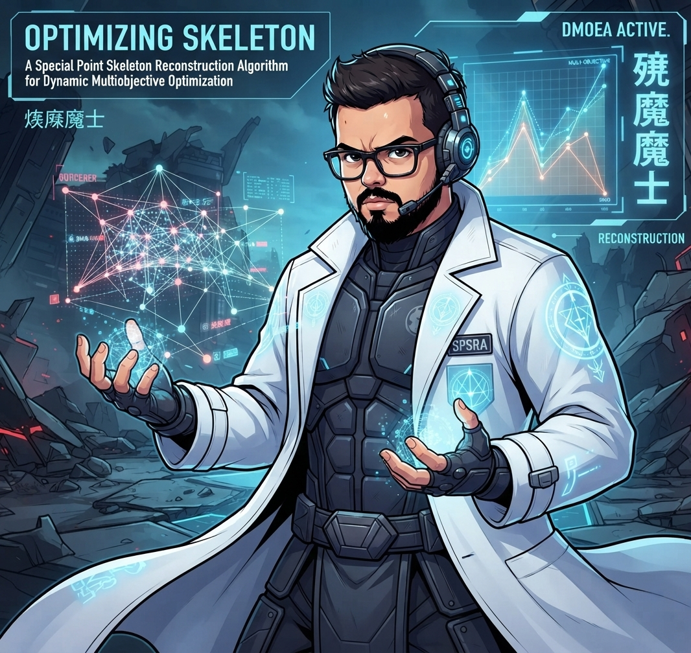

Último Post
Esqueleto de Pontos Especiais: A Nova Fronteira na Otimização Multiobjetivo Dinâmica
O Desafio da Otimização em Tempo Real No vasto universo da Inteligência Artificial, frequentemente nos deparamos com problemas de "Otimização Multiobjetivo" MOO. Imagine tentar configurar um sistema onde você precisa,...